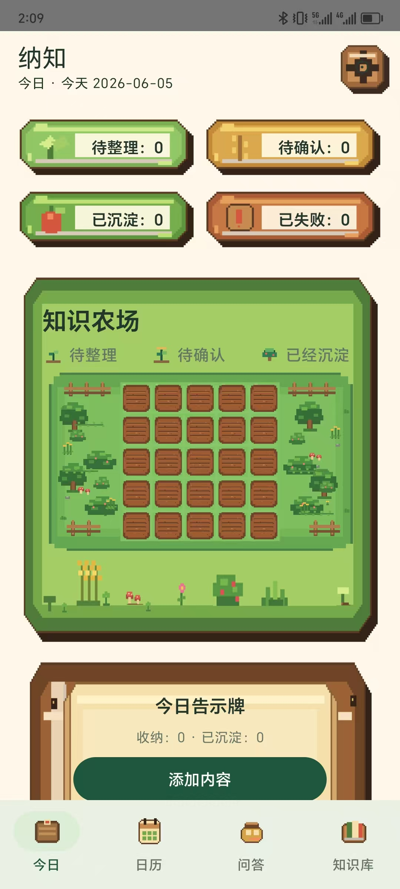
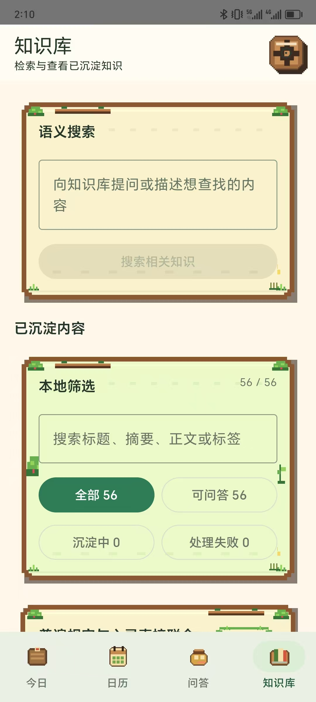
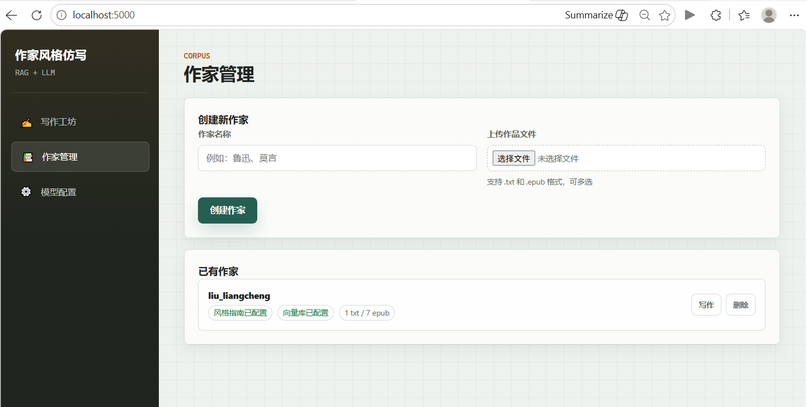
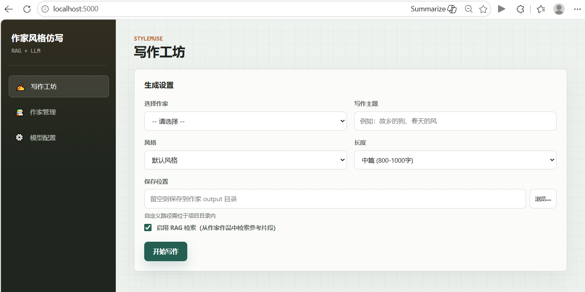
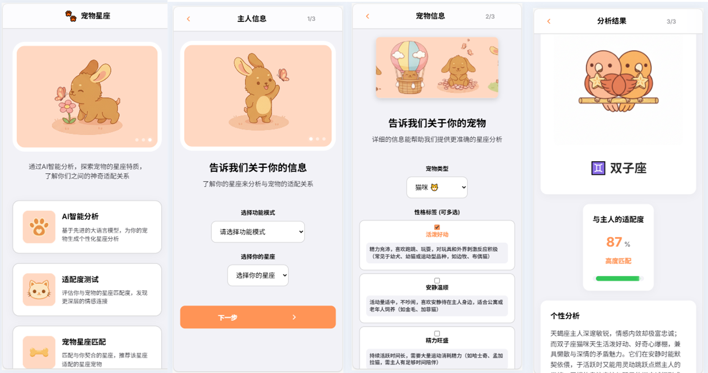
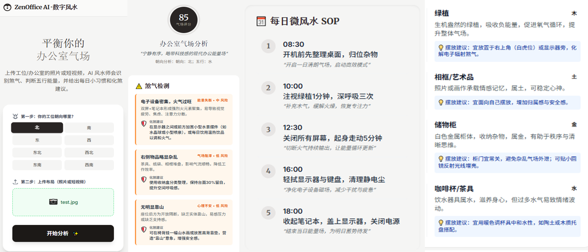
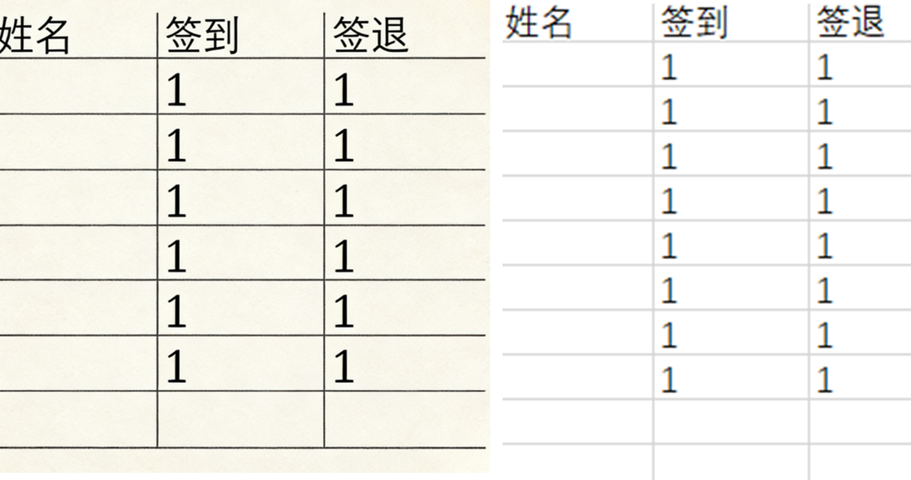
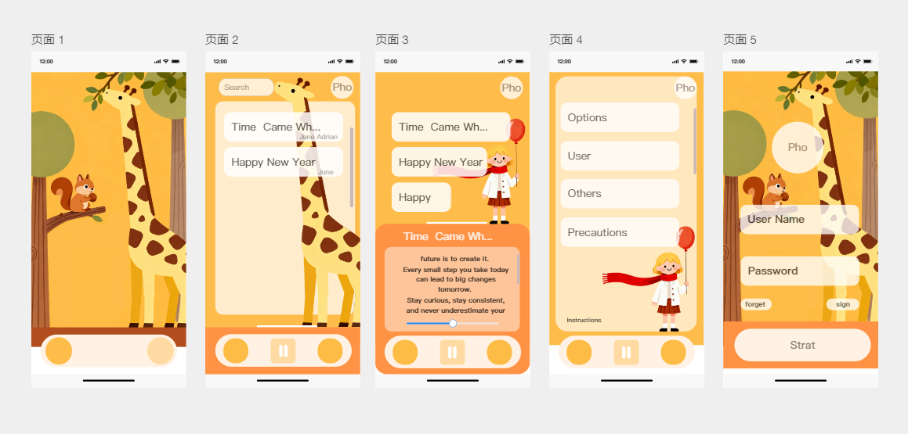
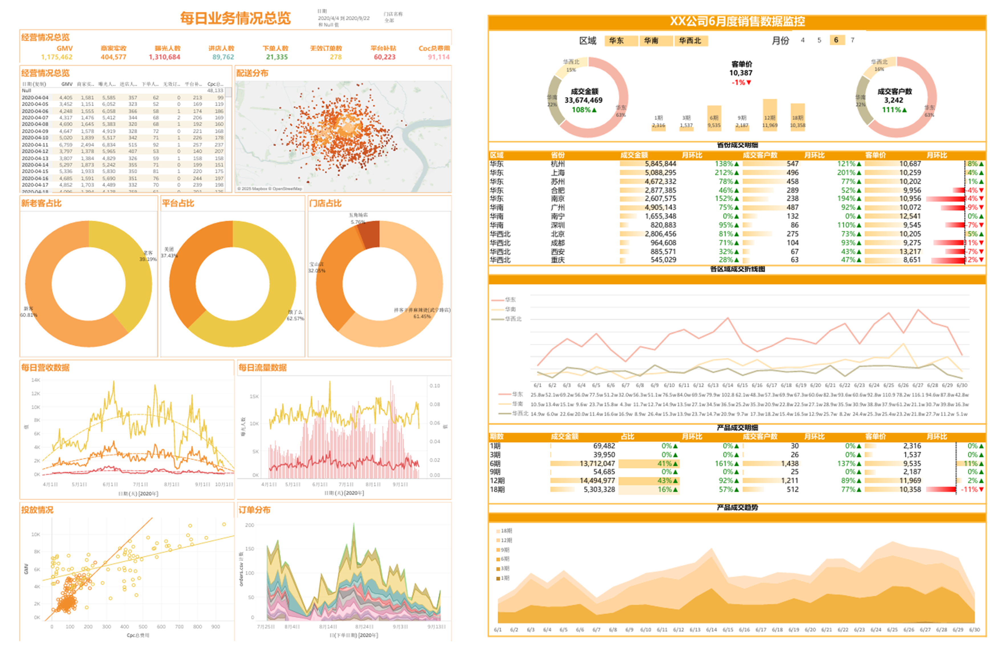
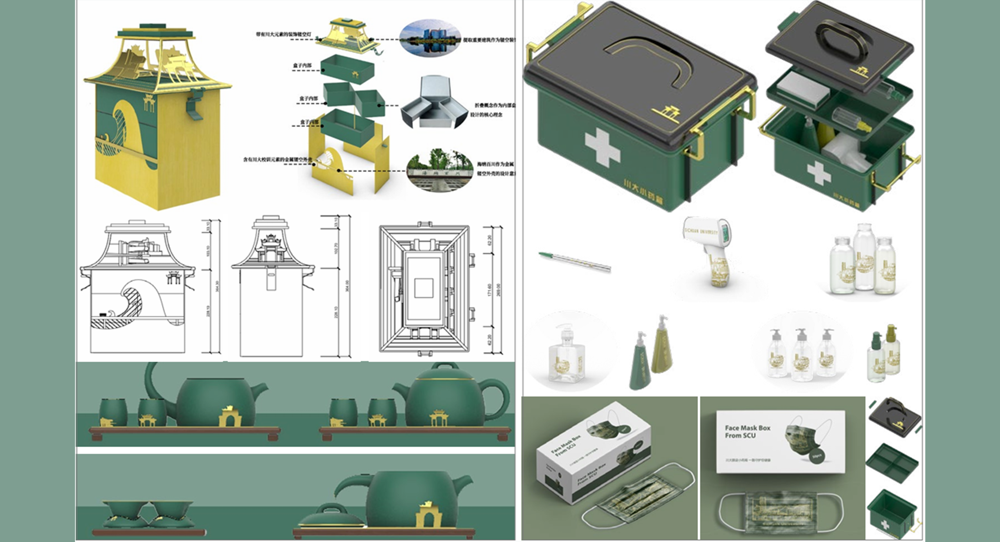

基本信息
- 姓名刘玥
- 电话18011564776
- 邮箱 Liue.U@foxmail.com
Resume
教育背景、联系方式与荣誉奖项。
Experience
围绕教育 Agent、智能硬件、AI 生成与线下规划的产品实践。
教育科技 / 教案 Agent / 动态 RAG
智能硬件 / 视觉识别 / AIoT 平台
AI 生成 / 电商冷启动 / 高客单定制探索
用户研究 / 城市规划 / 策略建模
AI Projects
Nazhi 与 StyleMuse 是当前网站新增重点，展示移动端知识库与 AI 写作系统的完整产品链路。
Mobile AI Knowledge Base
面向移动端阅读、短视频与音频场景，解决传统收藏和截图工具无法结构化沉淀信息的问题， 让内容最终变成可检索、可追问、可回溯的本地知识库。
项目地址： https://github.com/MissingDanial/Nazhi


AI Writing System
针对 AI 写作中风格不稳定、易照搬原著、缺乏质量控制等痛点，搭建具备 “语料分析 - RAG 检索 - 多 Agent 协作 - 生成后控”闭环的仿写系统。
项目地址： https://github.com/MissingDanial/StyleMuse


Product Practice
从兴趣场景出发，用低成本验证和 AI 能力包装完成早期产品闭环。

面向“宠物性格解读”和“人宠星座匹配”需求，从 0 到 1 完成 PRD、UI 设计与前端开发。 展会期间单日获取 2000+ 次扫码，转化 800+ DAU。

基于 Qwen-VL 的视觉理解能力，将办公桌图像识别转化为“风水 / 环境心理学”垂直分析， 生成具有情绪安抚风格的优化建议。

面向每场 200+ 人的讲座签到统计，基于 Excel Power Query 与 OCR 自动化数据处理，将电子签到统计从 20 分钟缩短至 2 分钟（-90%），纸质签到处理从 30 分钟缩短至约 5 分钟（-75%），降低错误率并提升活动组织效率。
项目地址： https://github.com/MissingDanial/Image-table-to-Excel-table
Research Projects
围绕深度学习、多模态数据融合与大语言模型解释性应用的研究实践。
深度学习运用 / 多模态融合 / 城市声环境
大语言模型运用 / 卫星图像理解 / 可解释识别
Design Works
建筑、UI、数据分析与文创作品，补充产品表达与视觉叙事能力。


